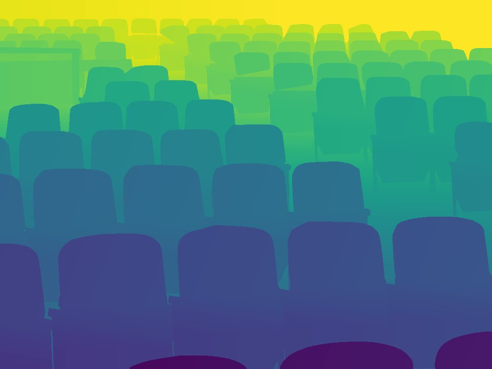
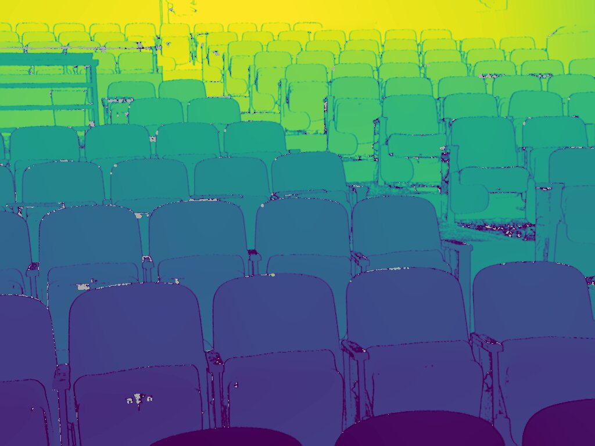
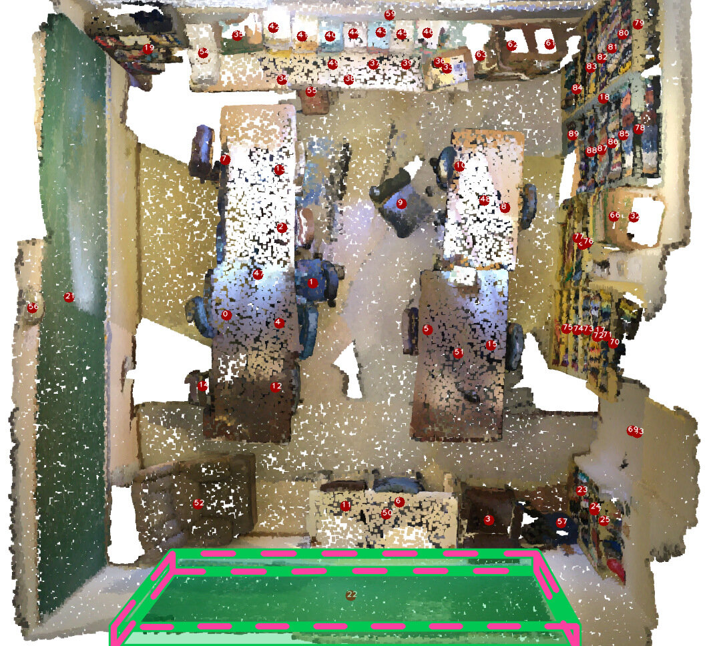
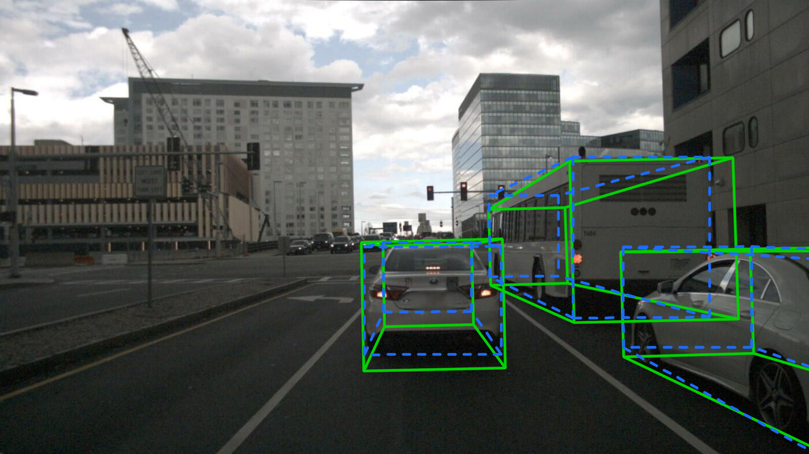
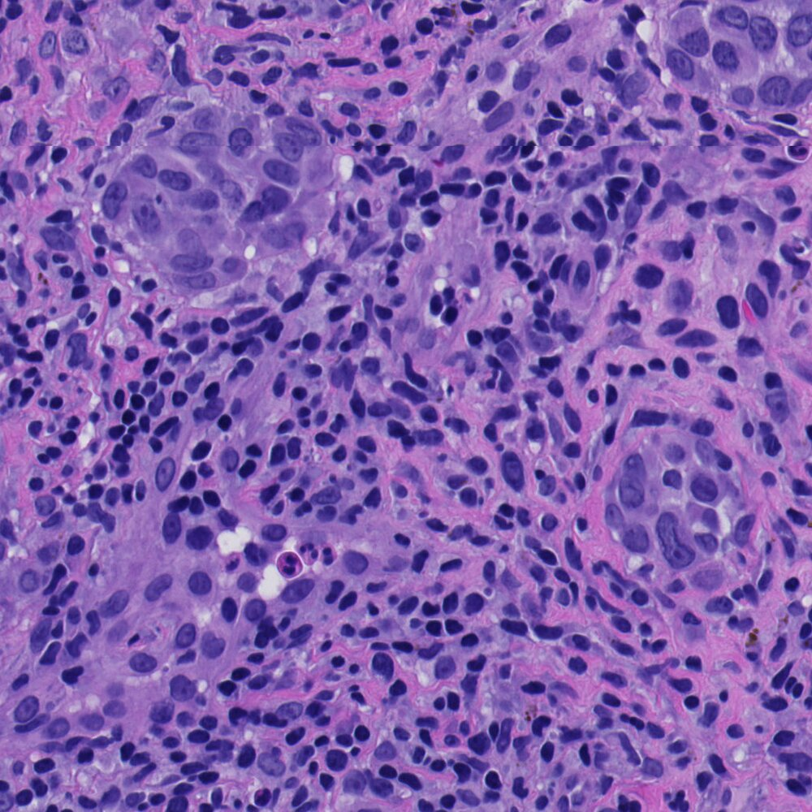
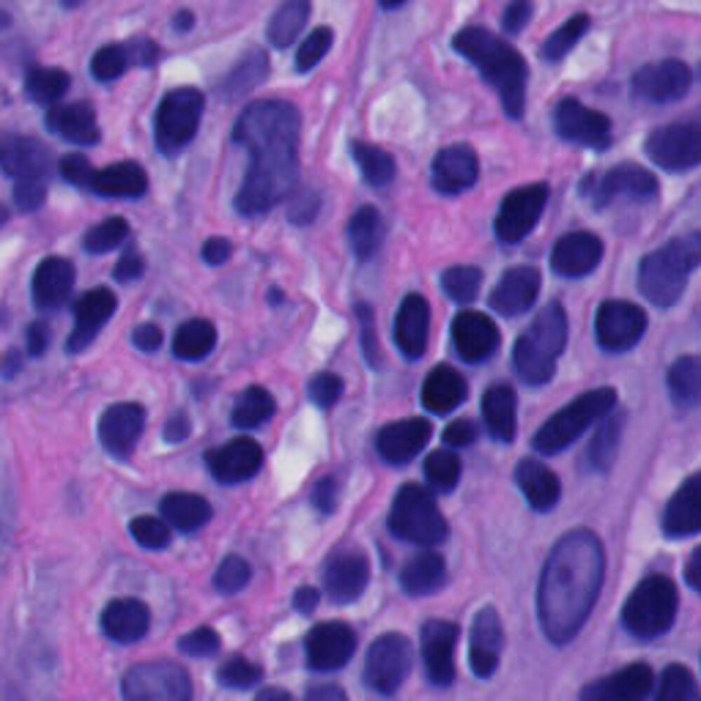
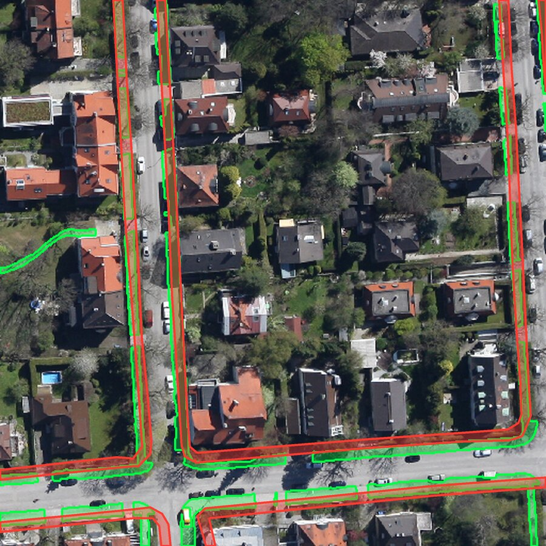
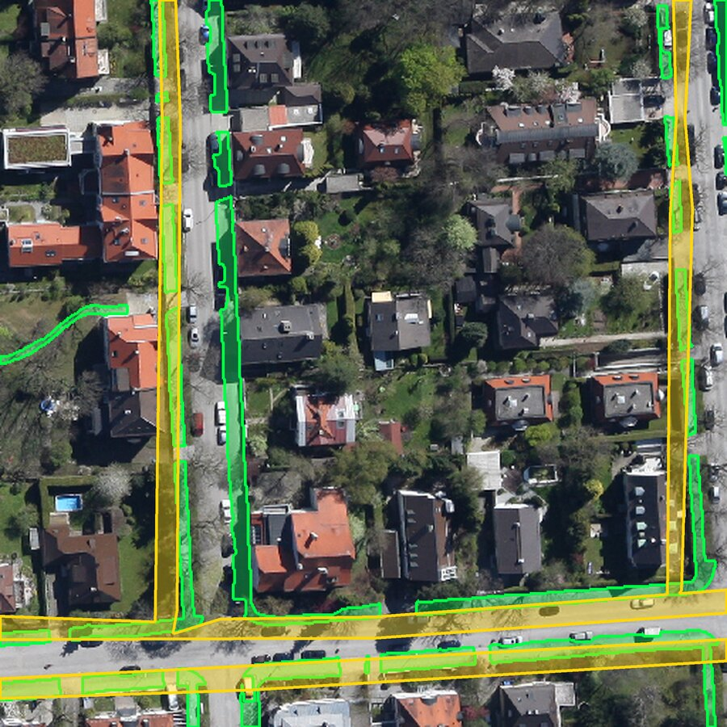
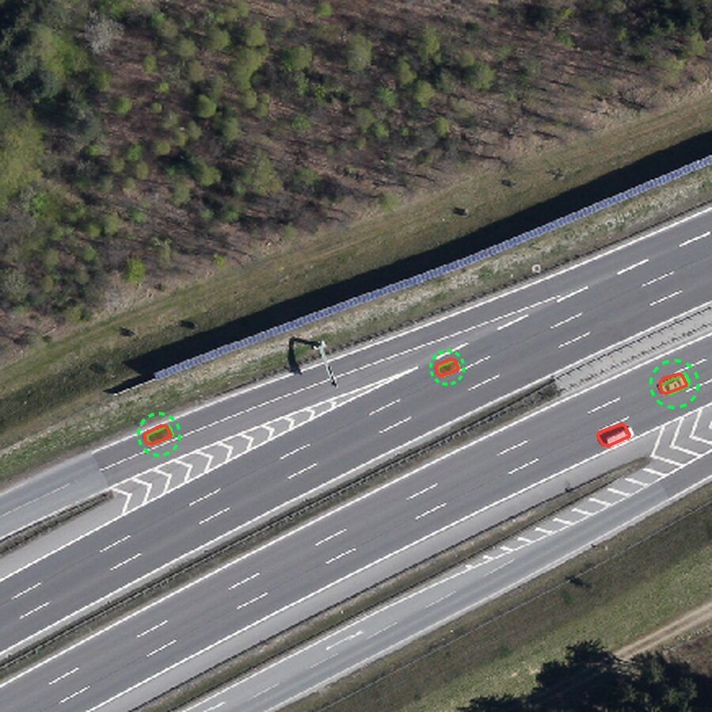
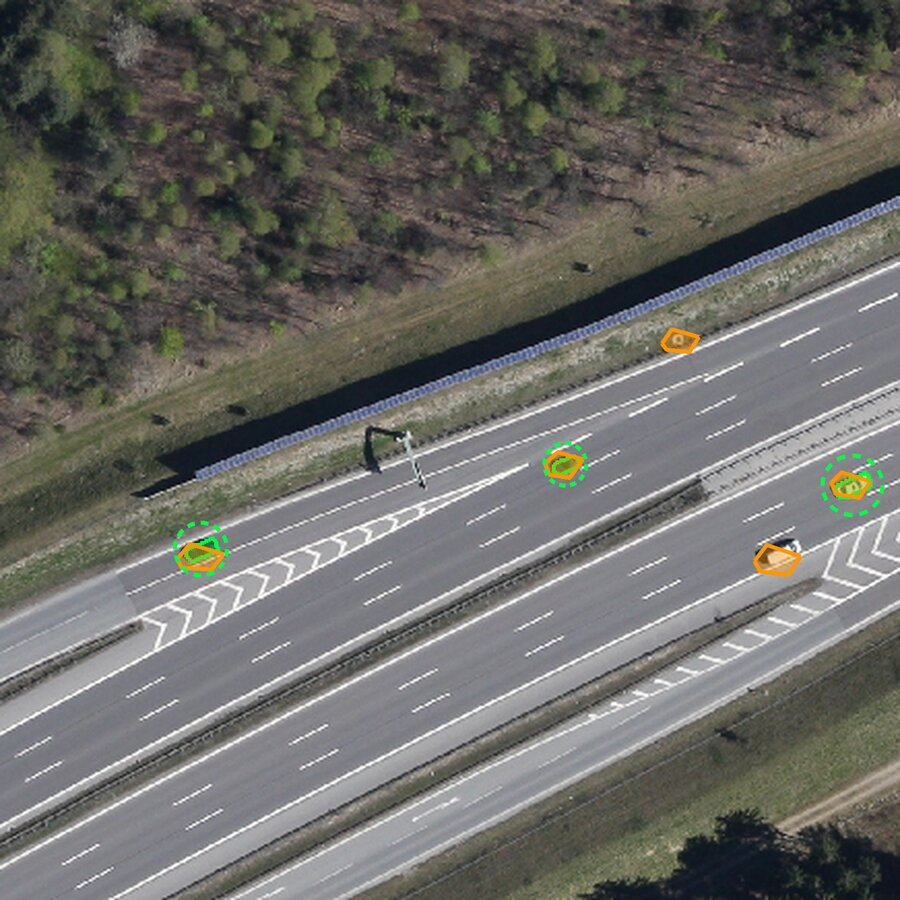

Frontier general-purpose systems are expanding beyond visual understanding into tasks traditionally
handled by dedicated vision models. How much of computer vision is now accessible through a
general-purpose system, and where do dedicated models remain necessary? We evaluate GPT-6 Astra
alongside five frontier systems across 34 capabilities and 55 benchmarks spanning nine areas of computer
vision. Semantic understanding, reasoning, and object-centric prediction increasingly approach specialist
or human reference levels, while precise geometry, faithful reconstruction, temporal consistency, and
specialized visual knowledge remain challenging.
Mapping the changing landscape of general-purpose vision
34 capabilities across nine areas of computer vision, drawn from 55 benchmarks.
Hover a task to see how the
six systems score against specialist models and humans.
To understand how far frontier visual capabilities have progressed, we consider how close their performance is
to established reference levels. For each capability, we compare the best generalist score as a percentage of
the reference, S for specialist and H for human.
Best generalist as a percentage of the best available reference
Some capabilities approach reference levels, while substantial gaps remain in tasks requiring precision, fidelity, or specialized expertise. The choice of reference also affects how we interpret these results: matching a
specialist does not necessarily mean reaching human performance or solving the task.
Frontier visual capability: Shared strengths, differences, and remaining headroom
6 frontier general-purpose systems across 34 capabilities spanning 9 broad areas of computer vision.
LowestHighest
Reference Model reports either a dedicated specialist, trained or designed specifically for the task,
or a prior generalist SOTA, an earlier general-purpose model with the strongest reported result on the benchmark.
Human is based on benchmark-reported human performance where available. The last two columns summarize
complementary aspects of the capability landscape: Best model vs. ref. measures how far the best generalist exceeds
or trails the strongest available model or human reference, indicating the remaining headroom (RQ3); Best vs. 2nd best
reports its margin over the next-best generalist, highlighting where a particular system stands out (RQ2).
Qualitative examples
Frontier models now tackle tasks once handled only by specialist models.
GPT-6 Astra detects objects in crowded scenes and segments intricate shapes, extending general-purpose vision to tasks traditionally handled by specialist models.


Ground truthGPT-6 Astra
Depth estimation · Layout captured, fine detail smoothed

3D visual grounding · “the thin, 4-meter blackboard”

3D object detection · Coherent 3D boxes
General-purpose models show emerging strengths in 3D grounding and detection, while gaps remain in precise object geometry, depth estimation, and geometrically consistent reconstruction.
GPT-6 Astra shows substantial progress in video segmentation, capturing main object shapes and distinguishing multiple instances. Precise boundaries, small structures, and separation of nearby objects remain challenging.
2D medical grounding · “patchy consolidation in the mid left lung”

Microscopy & pathology · full region

Zoom-in (dashed box)
Organs and findings can be localized in CT and X-ray. In pathology, nuclei are localized and delineated accurately, yet assigning the correct nucleus type remains substantially harder.
Ground truth GPT-6 Astra Fable 5 Kimi K3

“sidewalk” · GPT-6 Astra

“sidewalk” · Kimi K3

“car driving on the road” · GPT-6 Astra

“car driving on the road” · Fable 5
General-purpose models show strong remote-sensing understanding, but accurately grounding fine-scale objects remains challenging.
vs.
Restorations can look plausible but hallucinate content: in the low-light case, four bowling pins become five, extra pins appear on an empty lane, and the banner text changes, while the specialist (MIRAGE) stays faithful. PSNR/SSIM are computed on full images; the crops enlarge the red box 4×.
Q1
How broad is the visual coverage of current frontier systems relative to human and specialist references?
Recognition, Perception, and Visual Reading vs. Visual Reasoning
Strong recognition, counting, and visual reading extend across all six models. OCR approaches human performance, while document, chart, and infographic understanding exceeds the human score. Mathematical reasoning reaches human levels, while visual logic remains harder.
Localization, 3D Perception, and Video Understanding
2D localization and object-centric 3D understanding are emerging strengths, approaching or exceeding specialist performance on several tasks. Video understanding is also competitive, while precise geometry and consistent segmentation across frames remain challenging.
Image Generation, Editing, and Restoration
Image generation, editing, and quality assessment approach specialist levels, with Astra exceeding the evaluated references. Faithful image restoration remains a shared weakness across all six models.
Robotics and Expert-Domain Vision
Driving-scene, embodied, medical, and remote-sensing understanding approach or exceed specialist performance. Astra also demonstrates successful navigation, while fine-grained pathology recognition and grounding small remote-sensing targets remain challenging.
Q2
Where do frontier systems converge, and where do they still differ substantially?
Converge on shared strengths
Visual reading shows the clearest convergence. Recognition, scientific reasoning, image generation
and editing, and embodied understanding are increasingly becoming shared strengths across frontier models.
Converge on shared limitations
All six models struggle with faithful image restoration and fine-grained pathology recognition.
Understanding an image or locating a structure does not guarantee accurate reconstruction or identification.
Emerging capabilities remain uneven
Strong detection and video understanding are concentrated in selected models. Performance varies
substantially across 3D tasks and medical grounding, with different models showing strengths on different subtasks.
Astra advances reasoning and structured prediction
Astra shows substantial advances in visual logic and spatial reasoning, alongside large gains in
video segmentation, pose estimation, image segmentation, and 3D grounding.
Q3
For which task types is specialist-level performance available, and what task properties predict the remaining gap?
Task properties associated with the remaining gap
Q4
Can added reasoning, explicit tool use, or open specialist‑as‑tool pipelines close those gaps, and at what cost?
Effect of reasoning effort and tool use on GPT-6 Astra. Above each bar: score ratio and
inference-cost ratio, relative to low effort (left three) or to the run without tools
at xhigh effort (right).
Citation
BibTeX
If you find this work useful, please cite it.
@article{rasheed2026frontiervision,
title = {Hard Vision, Easy Vision: What GPT-6 Astra Reveals Across Computer Vision},
author = {Rasheed, Hanoona and Kurpath, Mohammed Irfan and Ren, Bin and Cholakkal, Hisham and Khan, Fahad Shahbaz and Khan, Salman},
journal = {arXiv preprint arXiv:2609.35718},
year = {2026}
}